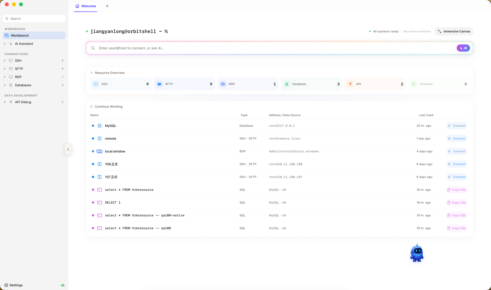
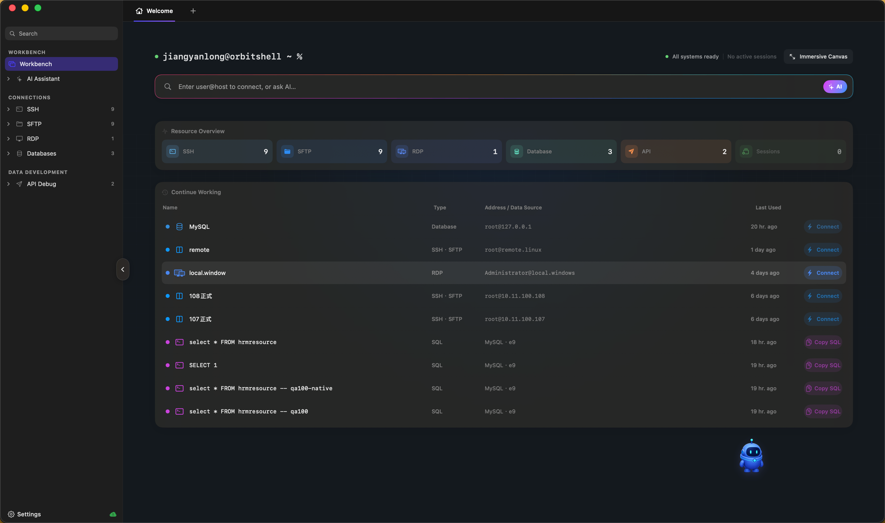
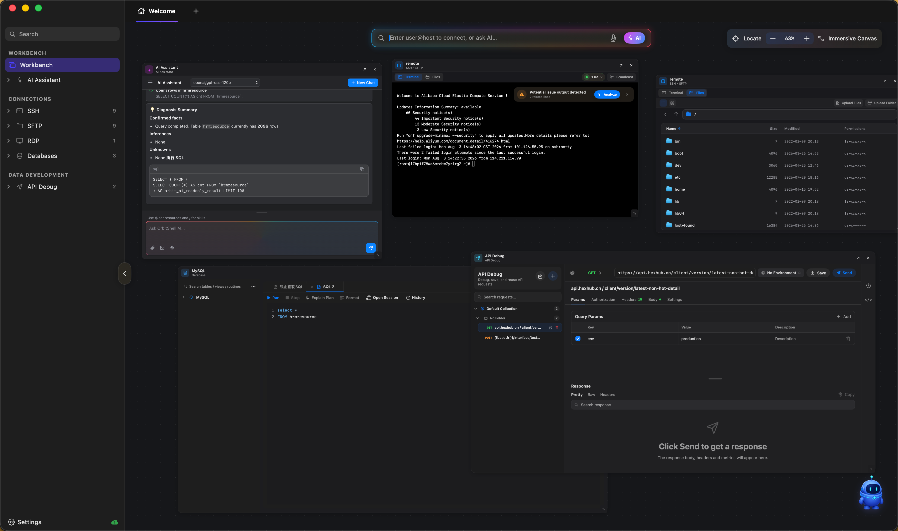

One workbench to connect them all.
SSH, SFTP, RDP, 30+ databases and API debugging — all unified in one elegant workbench. AI assistant by your side, making ops and development never been this efficient.

Unified Workbench
Manage SSH, SFTP, RDP, databases and API debugging in one window. Resource overview at a glance, double-click to connect.
AI Smart Assistant
Built-in AI with context-aware diagnostics. One-click terminal error parsing, intelligent SQL optimization, throughout your entire workflow.
Immersive Canvas
All-new immersive canvas mode. Freely arrange AI, terminal, file, database, and API panels. Build your workspace like building blocks.
It all starts here
The smart search bar supports direct user@host connections, or ask the AI assistant. Resource overview cards show real-time connection counts.
- Recent work history, restore last session with one click
- SQL query history for quick copy and re-execution
- Group management support, clear separation of prod/staging
Late-night ops, easy on the eyes
Perfectly adapts to macOS dark mode. Clear visual hierarchy and elegant experience even in deep dark themes.
- Auto-follows system appearance settings
- Unified dark style across terminal and file manager
- AI assistant stays prominent and easy to use in dark mode

Immersive Canvas
Freely arrange your work panels. AI chat, SSH terminal, SFTP file manager, SQL editor, API debugger — all collaborating on one canvas.

30+ Databases, Ready to Go
From mainstream relational databases to vector databases, from domestic databases to cloud-native — one platform covers them all.